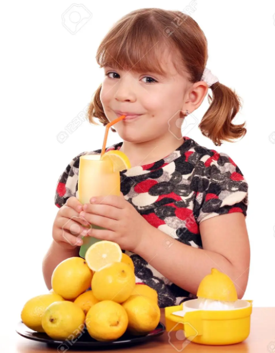

Galego Intonation Questionnaire
Galego Intonation Questionnaire
Statements
Neutral
Unmarked
- Preguntaronche si queres peras ou mandarinas. Ti respondes que mandarinas. Mandarinas.
- Mira o debuxo e di o que fa a rapaza.  **
- **
Enumeration
- Di los días de la semana.
- Haz una lista de las frutas que más te gustan.
Marked
Contrastive focus
- Entras en una frutería y la frutera es un poco sorda.
A. Quiero un kilo de limones. A.
B. ¿De naranjas? B.
A.
Exclamative
- Entras en una panadería y notas un olor a pan muy bueno. Díselo a la panadera.
- ¡Qué olor a pan tan bueno!
Contradiction statement
- Una amiga y tú estáis hablando de unos amigos que se van a vivir al extranjero. Tú sabes segura que irán a Lima, pero tu amiga piensa, también bastante segura, que irán a Bogotá. Dile, seguro, que no, que irán a Lima.
- ¡Que no, que irán a Lima!
Uncertainty statement
- Te han encargado comprar un regalo para alguien que no conoces mucho y te da un poco de apuro no comprarlo bien. Dile a la persona que te lo ha encargado que igual no le gusta el regalo que le has comprado.
- Puede que no le guste el regalo que le he comprado.
Statement of the obvious
- Estás con una amiga y le cuentas que María, una amiga común, está embarazada. Ella te pregunta que de quién está embarazada y tú te extrañas mucho de que no lo sepa porque todo el mundo sabe que es de Guillermo, su novio de toda la vida. ¿Qué le dices?
- ¡Sí, mujer, de Guillermo!
Yes-No Questions
Neutral
Information-seeking
- Entras en una tienda y pides al tendero si tiene mermelada.
- ¿Tiene mermelada?
Disjunctive yes-no question
- Para postre tienes melón y helado. Pide a los invitados si quieren melón o helado.
Enumeration
- Para postre tienes varias cosas. Pide a los invitados si quieren mandarinas, peras, sandía o helado.
Marked
Confirmation-seeking yes-no question
- Sabes que fuera hace mucho frío. Entra alguien bien abrigado y le preguntas si teine frío.
- Jaime ha dicho que vendría a comer. Se lo preguntas para confirmarlo.
- Vendrás a comer, ¿no?
Imperative yes-no question
- Tus nietos arman mucho alboroto y no te dejan oír la televisión. Les pides si se quieren callar.
- Pide a tus sobrinos si quieren caramerlos.
Wh-questions
Neutral
Information-seeking
- Pide qué hora es.
- Tienes que viajar a París y quieres comprar un regalo a una persona que no conoces y con la que quieres quedar bien. Quieres que un amigo tuyo te aconseje y le pides qué le traería.
- Ves que María se va. Pregúntale dónde y cuándo volverá.
Marked
Imperative wh- questions
- Pides a tu hijo que haga arreglo en la casa y no estás seguro que lo vaya a hacer ay que no es la primera vez que se lo pides. Pregúntale, medio enfadada, cuándo lo hará.
- Tienes ganas de que unos amigos vengan a comer a tu casa. Medio suplicando, porque ya te han dicho que no pueden venir, le prguntas por qué no viene.
Echo questions
Neutral
Neutral yes-no echo question
- Te dan la hora, pero no acabas de entenderla. Piensas que te han dicho que son las nueve. Pregúntale que si te han dicho las nueves.
Nuetral wh- echo question
- Te han pedido dónde vas, pero no sabes si lo has entendido bien. Pide si es esto lo que ten han pedido.
Disjunctive echo question
- Te han pedido por dónde has llegado, pero tú no sabes que te han pedido esto y si te han pedido por dónde has entrado. Pide si te han preguntado una cosa o la otra.
Marked
Counterexpectational yes-no echo question
- Te dicen que un compañero tuyo, Mario, se presenta por alcalde. No te lo crees y lo vuelves a preguntar.
Counterexpectational wh- echo question
- Tu vecina te cuenta que fue a un restaurante a comer y pidió conejo con setas. Ella dice que le dieron liebre en lugar de conejo. No te lo acabas de creer. Pídelo qué le dieron (muy extrañada).
Imperative
Command
- Estás en el parque con tu nieta, María, y se te escapa. Dile que venga, que no se aleje tanto de ti.
Request
- Quieres ir al cine con un amigo. Te dice que tiene trabajo, pero tú sabes que el trabajo lo puede dejar. ¿Cómo lo harías para convencerlo?
- ¡Va, vente!
Vocatives
- Entras en una casa de una amiga tuya, Marina, pero al entrar no la ves. Llámala.
- Pasan diez segundos y no sale nadie. Vuelve a llamarla.